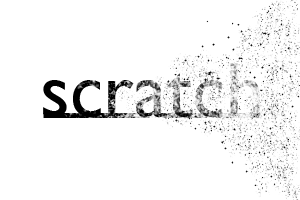

Scratch provides a quick & simple way to utilize a temporary scratchpad layer in AutoCAD. Scratch allows you to quickly switch in & out of the scratchpad layer, and throw it away whenever you want, leaving the rest of your AutoCAD drawing untouched.
I’ve been using it for
- transferring geometry
- building complex shapes (I use the boundary command later to create objects)
- throwaway dimensions (when estimating & sketching ideas)
Download
UPDATE: Scratch v0.8 is now available.
Download Scratch v0.7 now!
Use
Scratch is super simple, there are only two commands (+1 bonus command).
- cst - will toggle you between the magenta scratchpad layer and the original layer.
- est - deletes the scratchpad layer and everything in it.
- 1` - changes your current layer to your prior layer.
Crosshair Colors
Loading the second file scratchColor.lsp enables the crosshair color switcher. Whenever you make the scratchpad layer current, the crosshair color will change to magenta. This provides a constant, unobtrusive reminder when the scratchpad layer is current.
Notes
- Scratch runs on AutoCAD v2000 - 2010 (v2006 and earlier require the Express Tools.)
- Scratch stores your original crosshair colors; if you have them customized, it will not clobber your original settings.
- You can change the name, lineweight, color, and linetype of the scratchpad layer in the top of the scratch.lsp file.
